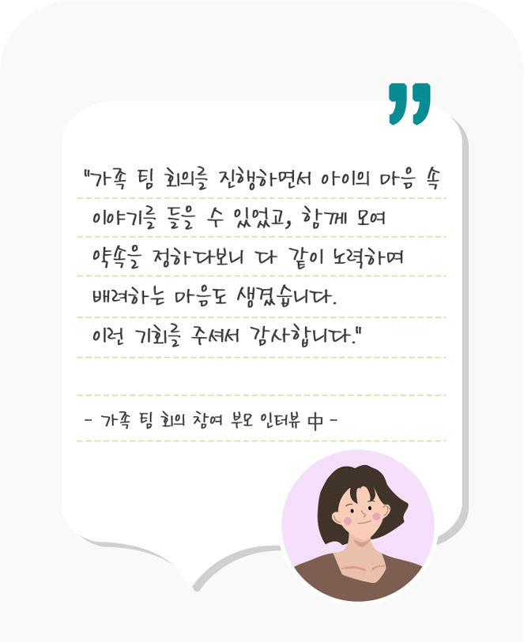

폭력 및 학대로부터의 보호
아이들의 안전한 보호와
아이들의 안전한 보호와
온전한 성장 스토리를
확인해 보세요!
가정에 찾아온 변화보기
-
학대피해아동보호
1,234명
* 2024년 9월 기준
ㅣ폭력 및 학대로부터의 보호 |
우리 집으로 온(on) 마음
굿네이버스는 분리보호 된 학대피해아동이
안전하게 가정 복귀를 할 수 있도록
재결합 프로그램을 진행하고 있습니다.
재결합 이후 발생할 수 있는 문제 상황을
인식하고 대처할 수 있는 기술을 교육하며,
안전한 환경을 마련하고 가족관계 회복과
재학대 예방을 위해 함께하고 있습니다.
ㅣ폭력 및 학대로부터의 보호 |
가족 팀 회의
가족 재결합 프로그램을 개편하며
필수로 진행하게 된 ‘가족 팀 회의’ 는,
재결합 이후 가족들이 모여 대화를 나누며
앞으로 함께 지낼 때 지킬 수 있는 행동 계획을
같이 세우고 지키도록 독려하는 활동입니다.
